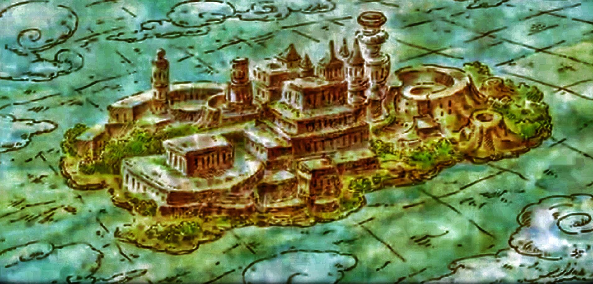

The Meaning of Freedom
At its core, One Piece is a story about freedom. Unlike traditional pirate tales focused solely on treasure, Eiichiro Oda constructs a narrative where becoming Pirate King symbolizes ultimate liberation. For Luffy, the title is not about ruling others — it is about being the freest person on the seas.
Throughout the series, freedom takes many forms: escaping oppression, protecting one’s dreams, breaking generational chains, and defying corrupt authority. The World Government serves as the embodiment of control, secrecy, and historical erasure, while pirates represent chaotic resistance against centralized power.

The Inherited Will
One of the most powerful recurring themes is the concept of inherited will. Characters carry the dreams of those who came before them. Gol D. Roger’s legacy lives through Luffy. The will of Ohara survives through Robin. Even antagonists act under burdens passed down by history.
Oda suggests that while individuals die, their dreams never truly disappear. They are reborn in new generations who dare to challenge the status quo. This thematic thread ties together decades of storytelling and gives emotional weight to even the smallest flashbacks.
The World Government and the Void Century
As the narrative progresses, One Piece shifts from episodic adventure to grand political mystery. The Void Century, an erased portion of history, becomes central to understanding the imbalance of global power. The Poneglyphs scattered across the world hint at truths the government desperately wants hidden.
This transition elevates One Piece from adventure manga to epic historical drama. Oda masterfully balances humor and absurdity with deeply serious themes about censorship, genocide, and systemic injustice.

Straw Hat Crew: A Found Family
Unlike many long-running series, One Piece thrives on its ensemble cast. Each member of the Straw Hat crew represents a personal dream — from becoming the world’s greatest swordsman to mapping the entire globe.
Their loyalty to one another is unwavering. The crew functions as a chosen family, bound not by blood but by shared ambition and respect. Emotional arcs like Enies Lobby and Marineford demonstrate the strength of those bonds.
Cultural Impact and Legacy
With over a thousand chapters, One Piece stands as one of the most successful manga series of all time. Its global fanbase spans generations. It has influenced countless creators and redefined long-form serialized storytelling.
Oda’s ability to plant narrative seeds decades in advance showcases extraordinary planning. The ongoing mystery surrounding the One Piece treasure continues to fuel discussion and theory crafting across the world.
Ultimately, One Piece is more than a pirate adventure. It is a meditation on freedom, legacy, friendship, and the courage to challenge oppressive systems. Its final saga promises to reshape everything readers thought they understood about its world.